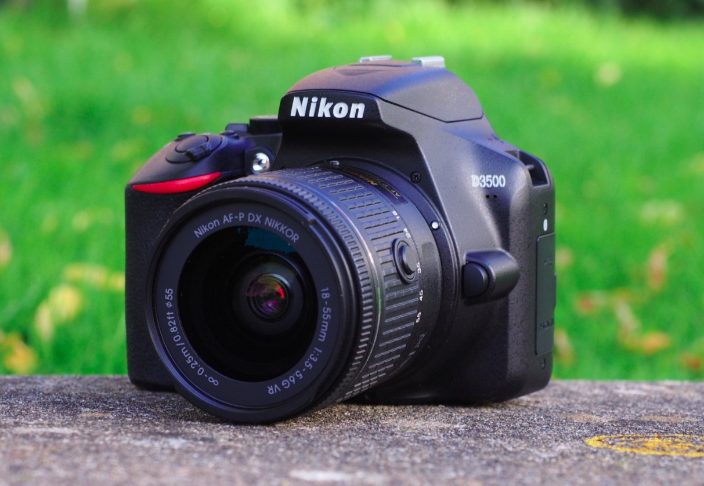

Kiirelt minu üheks lemmikuks hobiks/vabaajategevuseks on saanud fotograafia. Tänapäeval on ilusaid vaateid leida iga nurga tagant, tuleb osata otsida.

| Kaameratüüp | Hind | Kellele sobib |
|---|---|---|
| Nutitelefon | Odav | Algajale |
| Peeglivaba kaamera | Mitte liialt kallis | Huvilisele, hobikorras harrastajatele |
| Peegelkaamera | Kallivõitu | Edasijõudnutele |